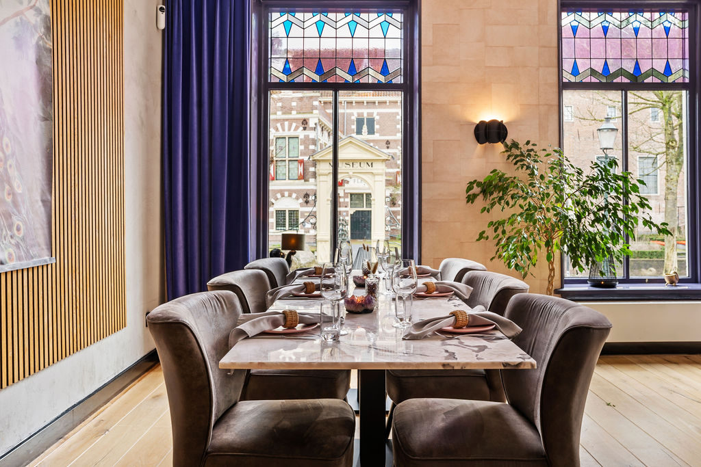
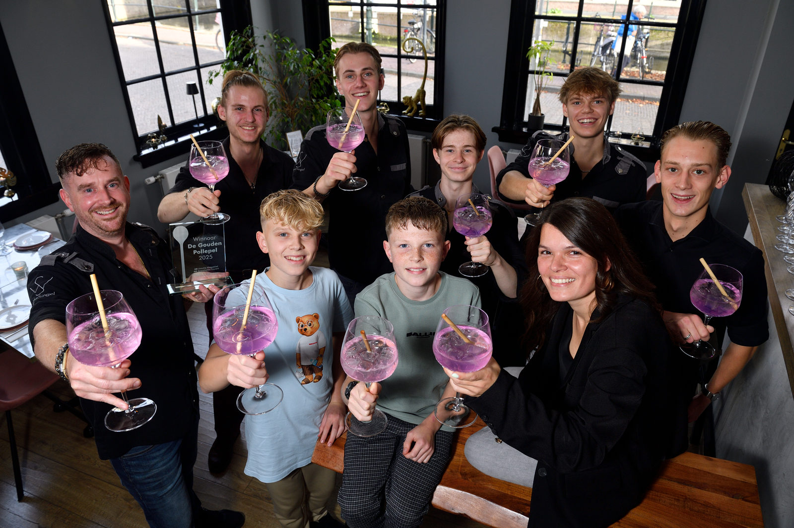
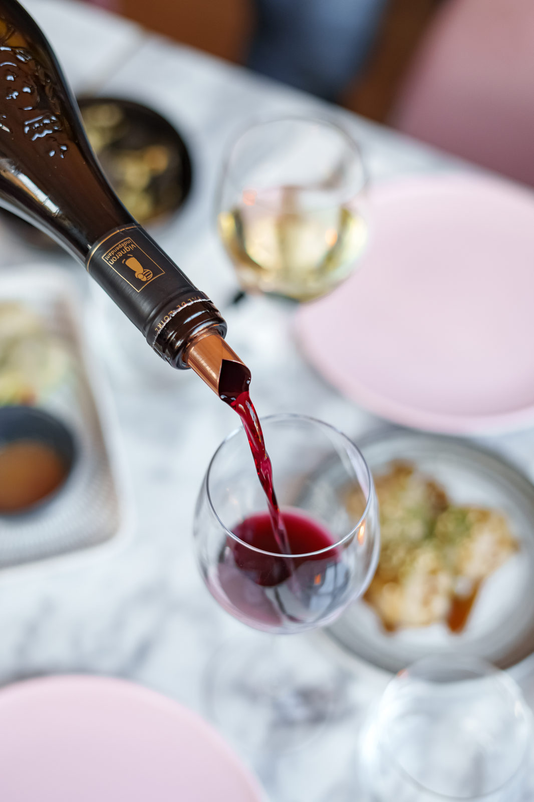
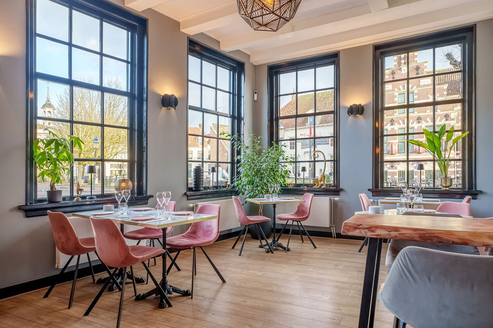
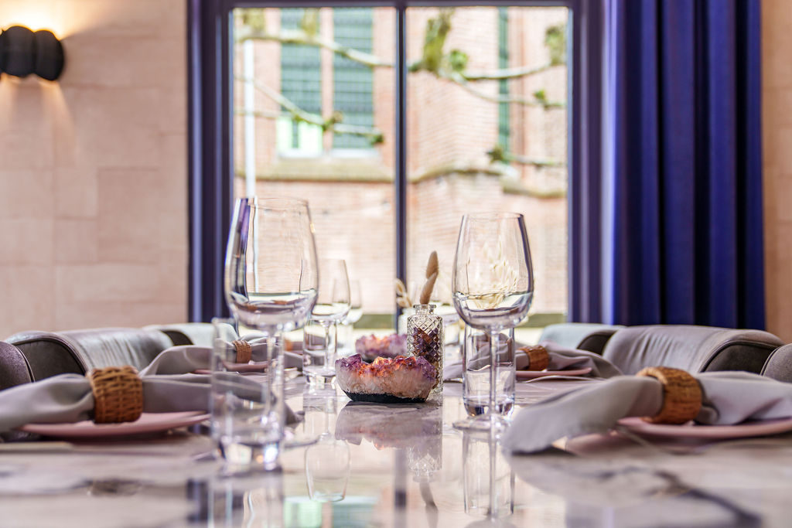
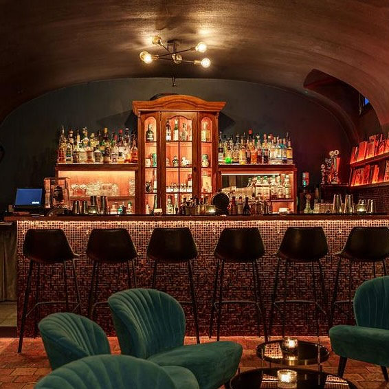

The Opening Act
€ 27,50 p.p.
Ontvangst met een aperitiefcocktail (met of zonder alcohol), gevolgd door een tweede cocktail naar keuze. Ongeveer anderhalf uur, voor groepen van 8 t/m 14 personen. Aankomst tussen 18:00 en 19:00 uur of om 22:00 uur.

Donderdag t/m zondag, diner vanaf 18:00 uur
Westsingel 48, Amersfoort
Bij WestSingel draait het om pure smaken, gezelligheid en een vleugje avontuur.
Kom langs en ontdek onze à-la-cartekaart vol gerechten om te delen (of gewoon lekker zelf te houden). Onze keuken heeft een Aziatische twist met een knipoog naar Japan. Of je nu de hele avond wilt tafelen of juist even snel langswaait voor een goed glas en wat lekkers: bij WestSingel voelt het altijd ontspannen en smaakvol.
Achter WestSingel staan wij: Pim (39) en Saskia (37), trotse ouders van Duco (16) en Joppe (13). Onze gezamenlijke reis begon in 2014 met Restaurant De Melodie in Soest. Vier jaar later vonden we in het hart van Amersfoort ons nieuwe thuis aan de Westsingel 48, dat we van top tot teen hebben verbouwd.
Een eigen restaurant was altijd onze droom: een plek waar passie, smaak en gastvrijheid samenkomen, en waar we onze liefde voor het vak delen met iedereen die bij ons aanschuift.

Proost op ons team én op De Gouden Pollepel 2025! Met passie, plezier en een flinke dosis teamwork maken we elke avond bijzonder.Team WestSingel

Met zorg samengesteld: wijnen die passen bij de gerechten van onze menukaart. Proef, combineer en ontdek jouw favoriet.
Pelassa · Piemonte, Italië
glas 9.50 · fles 48.50Champagne, Frankrijk
glas 14.50 · fles 72.50Champagne, Frankrijk
glas 17.00 · fles 85.00met of zonder alcohol
glas 11.50Bodegas Vinotage · La Mancha, Spanje · elegant & fris
glas 7.50 · fles 35.00A Telleira · Ribeiro, Spanje · stuivend & filmend
glas 7.50 · fles 35.00Castillo de Monjardín · Navarra, Spanje · rijk & elegant
glas 7.50 · fles 35.00Bodegas Vinotage · La Mancha, Spanje · fris & kruidig
glas 7.50 · fles 35.00Bodegas Vinotage · La Mancha, Spanje · sappig & fris
glas 7.50 · fles 35.00Colle Degli Amoretti · Puglia, Italië · zwoel, fluwelig
glas 7.50 · fles 35.00Art de Vivre · Zuid-Frankrijk · rijk & harmonieus
glas 7.50 · fles 35.00Morgadío · Rías Baixas, Spanje · kruidig & complex
fles 37.50"Too much of anything is bad, but too much champagne is just right."F. Scott Fitzgerald
Vier de feestdagen bij WestSingel en laat je verrassen door een culinair feestmenu vol verfijning, gezelligheid en aandacht voor elk detail.
We passen het menu aan voor zwangerschap, lactosevrij, glutenvrij, vegetarisch en sommige allergieën, zolang deze niet al te ingrijpend zijn. Geef ze door bij "Opmerkingen" tijdens het reserveren. Niet tijdig doorgegeven wensen op de avond zelf: meerprijs van € 5,- per gang.
Wordt in mindering gebracht op je rekening. Restitutie alleen tot 7 dagen voor je reservering, zonder uitzonderingen.
Stuur een WhatsApp naar 06 5770 3309.
WestSingel leent zich perfect voor groepen. Van intieme lunches tot bruisende borrels of feestelijke diners: wij denken graag met je mee.

Een stijlvolle, serene ruimte met marmeren tafels en comfortabele stoelen, voor een intiem diner vol aandacht en sfeer.
Zittend diner: max. 32 personen*

Een lichte, karaktervolle ruimte met hoge ramen, waar stadszicht en warme sfeer uitnodigen tot een ontspannen diner of borrel.
Zittend diner: max. 28 personen*
Walking diner / borrel: max. 40 personen
+ cocktailbar: max. 65/70 personen

Een intieme cocktailbar met zacht licht, rijke kleuren en een vleugje mysterie.
Max. 26 personen
* Qua tafelschikking graag even contact opnemen.
Max. 28-32 personen in Lounge of Restaurant. Wij serveren gerechten om met elkaar te delen (of niet), met een Aziatische twist en een grote knipoog naar Japan. In de keuken staat een Japanse grill waar de spiesjes vanaf komen.
In het menu houden wij graag rekening met allergieën en dieetwensen. Deze horen we graag minimaal één week van tevoren, bijvoorbeeld 'Kim vega'.
tussen € 60,- en € 70,- p.p.
Bijvoorbeeld een amuse, brood met boter, een ronde koude gerechten om te delen, soep per persoon, een ronde warme gerechten om te delen en zoete desserts om te delen.
tussen € 80,- en € 95,- p.p.
Bijvoorbeeld amuse, brood met boter, drie gangen hartige gerechten en de keuze voor een zoet dessert of kaas.
Je kunt het voorbeeldmenu naar wens aanpassen of uitbreiden met een ronde spiesjes van de Japanse grill. Onder voorbehoud van wijzigingen.
Siroop van lychee, roos en kittelbloem met Japanse Roku Gin of 0.0 Tanqueray Gin en een roodfruit-frisdrankje.
€ 12,50 per glasVan een van de meest prestigieuze huizen uit de Champagne. Vol, romig en toch sprankelend.
Brut € 72,50 · Rosé € 85,- per flesMousserend uit Piemonte, 100% Arneis. Tonen van citrus en witte bloesem.
€ 9,50 per glas · € 48,50 per flesJa. We hebben voorbeeldmenu's, maar je kunt dit altijd uitbreiden of aanpassen aan jullie wensen.
Zeker: borrel, shared dining, verrassingsmenu, walking dinner en een complete cocktailbeleving met WestWing.
Ja, WestSingel en WestWing samen kan, met een minimale omzetafname afhankelijk van dag en tijdstip.
Achter een onopvallende deur, diep in het hart van Amersfoort, vind je onze speakeasy cocktailbar.
Een intieme plek met een vleugje mysterie, waar sfeer en smaak samenkomen. De bar ademt de elegantie van de roaring twenties: zachte verlichting, fluwelen fauteuils, glanzend glaswerk en muziek die je meeneemt naar een andere tijd.
€ 27,50 p.p.
Ontvangst met een aperitiefcocktail (met of zonder alcohol), gevolgd door een tweede cocktail naar keuze. Ongeveer anderhalf uur, voor groepen van 8 t/m 14 personen. Aankomst tussen 18:00 en 19:00 uur of om 22:00 uur.
min. afname € 1.500,- (4 uur)
WestWing exclusief voor jullie gezelschap (max. 26 personen), ook op donderdag en zondag. Geen huurprijs, wel een minimale afname; elk extra uur € 350,-, volledig te besteden aan drankjes en hapjes. Cocktails € 12,50 tot € 17,50, desgewenst met cocktailmuntjes. Borrelhapjes € 21,50 per vier personen; warme hapjes uit WestSingel € 11,50 p.p. voor drie hapjes. De bar sluit om 0:00 uur.
€ 54,- p.p.
Cocktailworkshop met onze mixologist: aperitiefcocktail bij ontvangst, uitleg over historie en technieken en zelf je cocktail shaken, ook alcoholvrij. Ongeveer twee uur, start tussen 15:00 en 16:00 uur, voor 6 t/m 12 personen (minder dan 6: kosten voor 6). Vanaf 12 personen een cocktailproeverij voor hetzelfde bedrag. Kosteloos annuleren of verplaatsen tot 24 uur vooraf, daarna 50%.
Reserveren of vragen over arrangementen: cocktailbarwestwing@gmail.com. Groepen vanaf tien personen zijn welkom. Onder voorbehoud van prijswijzigingen.
Zeker. Met Foamee (zwangerproof) en 0.0 teruggedestilleerde spirits, met dezelfde kwaliteit als onze signatures.
Begin in WestWing en ga daarna door naar het diner in WestSingel, of andersom. Geef het door bij "Opmerkingen" bij je reservering.
Ja, bijpassende bar bites en kleine gerechten uit de keuken van WestSingel. De cocktailkaart wisselen we bewust niet vaak.
Van een diner voor 30 tot een avond in WestWing: vertel ons je plannen en we denken graag met je mee.
"May all who enter as guests, leave as friends."
Westsingel 48
3811 BB Amersfoort
Bellen 033 202 66 22
WhatsApp 06 5770 3309
aandewestsingel@gmail.com
Met de auto: parkeer in Garage Stadhuisplein of Garage Sint Jorisplein, beide 2 à 3 minuten lopen en 24 uur per dag open.
"We hebben echt een heerlijke avond gehad. Met gepassioneerde service en uitleg van het heerlijke eten wordt de avond een echt feest."Sara S.